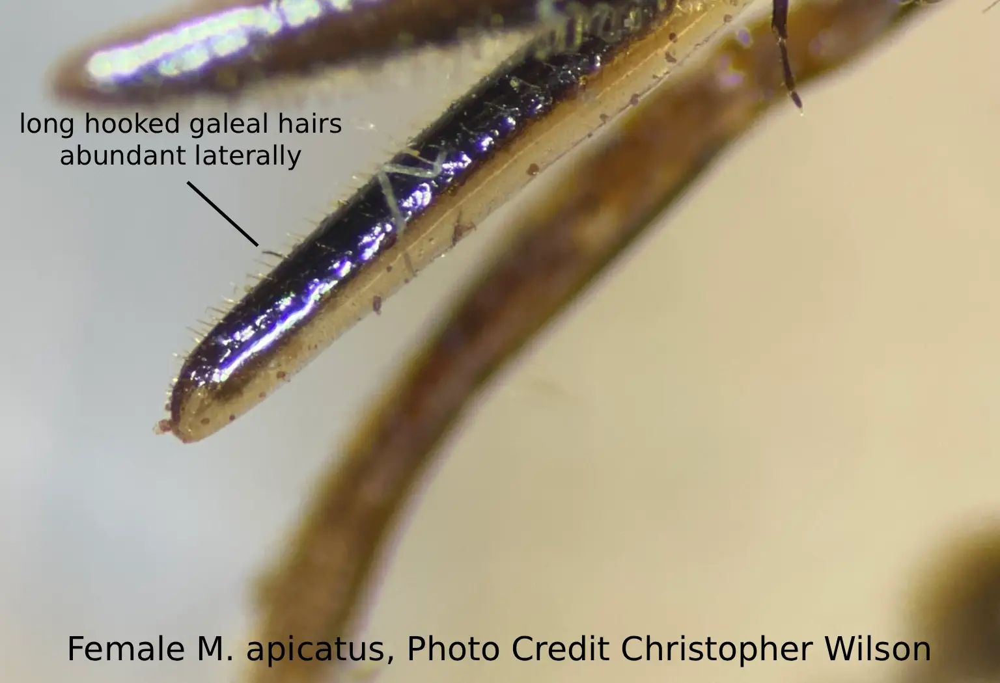
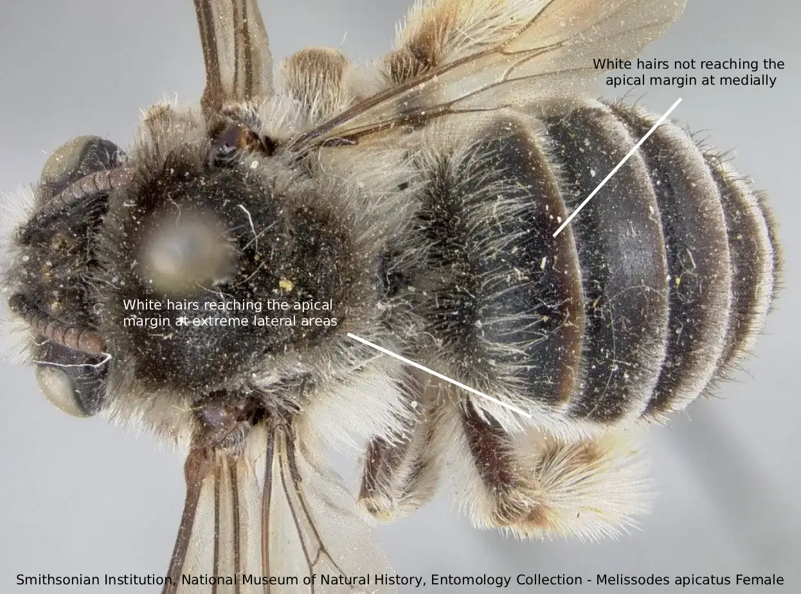
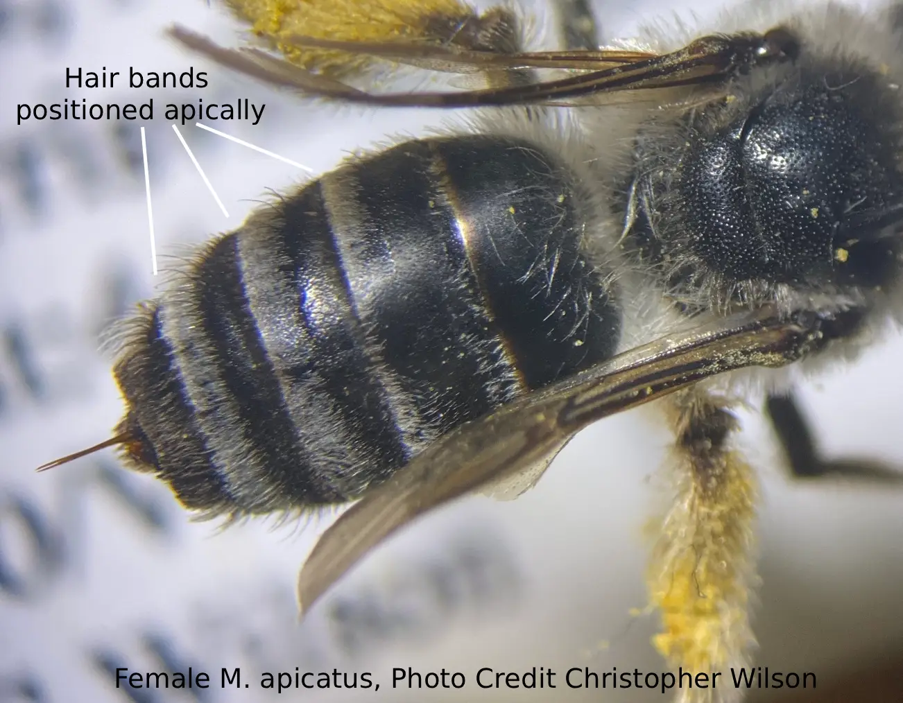
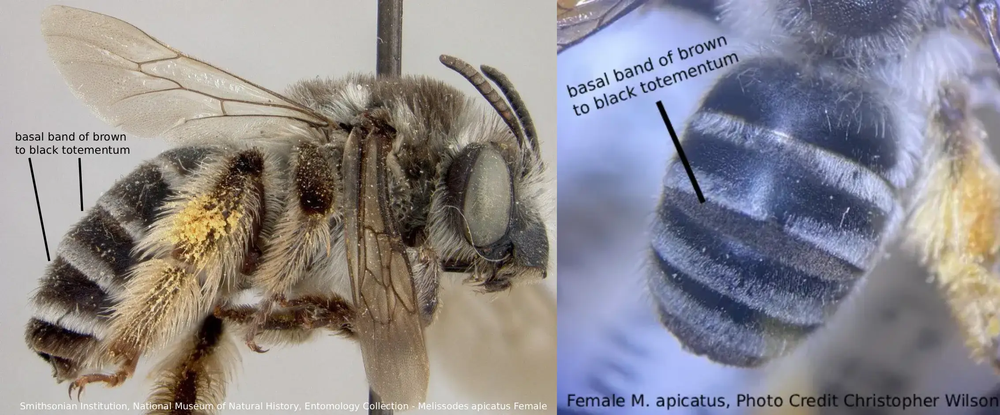
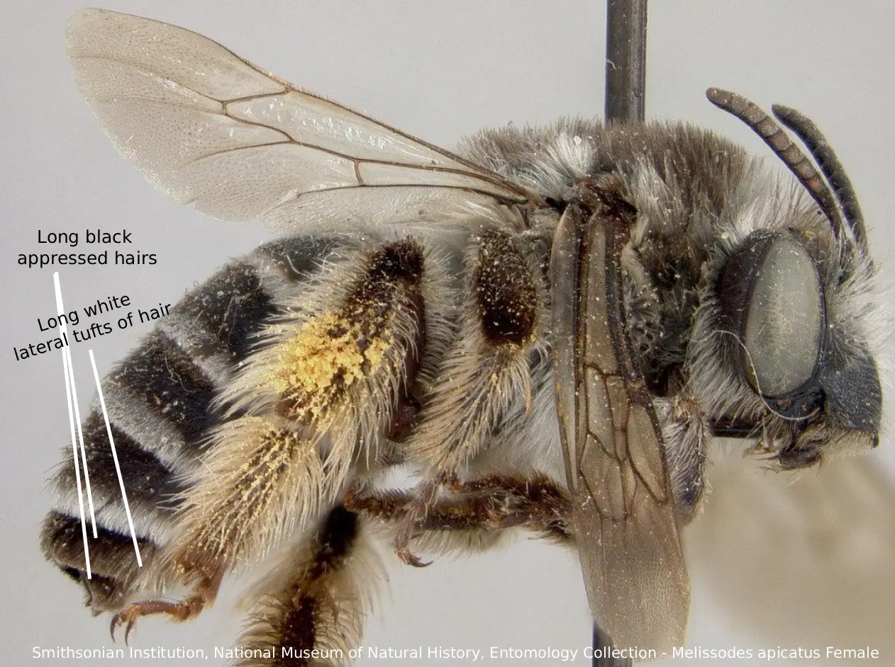
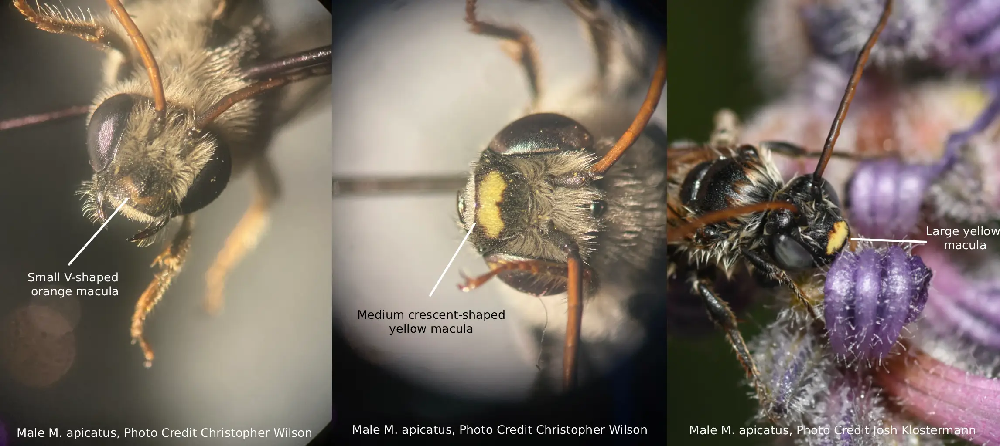
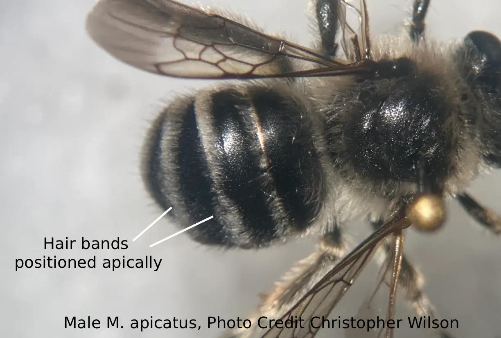

Melissodes apicatus Lovell and Cockerell, the pickerelweed long-horned bee, is a specialized and
geographically limited rare species of Nearctic bee (Laberge, 1956a). Like all Melissodes, male M. apicatus have long antennae,
and the females have short antennae in comparison (see "Genus" page for more information). This species resides in the subgenus
M. (Apomelissodes) Laberge. Both sexes of M. apicatus are distinct from other M. (Apomelissodes) Laberge, and the females can
be easily distinguished by their more prominent clypeal protrusion, long and abundant hooked hairs on the galea, short galea, distal white bands of the tergites reaching the apex across the entire tergum (Fig. 4),
and relatively weakly branched hairs on the scopa (Laberge, 1956a). Males can be distinguished from that of other M.
(Apomelissodes) Laberge by their long and abundant straight short hairs on the galea, short galea, distinctive pygidial
plate (treated more thoroughly in “Description and Identification”), distal white bands of the tergites reaching the apex across the entire tergum (Fig. 8), and the black clypeus with a large yellow to orange
macula that ranges in both size and color (Laberge, 1956a) (Fig. 7; see “Description and Identification” for more information on both sexes). M. apicatus is seemingly an oligolege of the genus Pontederia (Laberge, 1956a), however, male M. apicatus
have been documented on Melilotus alba and Stachys floridana (Laberge, 1963). These males were most likely foraging for only
nectar (Laberge, 1963), and most of the females caught were on Pontederia foraging for pollen and nectar (Laberge, 1963),
so the aforementioned assumption of oligolecty toward Pontederia is most likely correct.
Description and Identification
Based on Laberge's (1956a) description, Melissodes apicatus are medium sized setacouse bees. Females range from 11 to 14 millimeters in
length and 4 to 5.5 millimeters in width (width measured at the widest portion of the metasoma). Males are a bit smaller, being about
10 to 13 millimeters in length and 4 to 5 millimeters in width (width measured at the widest portion of the metasoma). The female's
first flagellar segment is on average 1.98 times the size of the second flagellar segment (standard deviation 0.075). The males are
the opposite where the second flagellar segment is on average 6.11 times the size of the first flagellar segment (standard deviation
0.118). Female wing length is 21.56 millimeters on average (standard deviation 0.252 millimeters), and male wing length is 21.35
millimeters on average (standard deviation 0.293 millimeters). Females have an average of 13.85 hamuli (standard deviation 0.379),
while males have an average of 12.65 (standard deviation 0.215).
Female
According to Laberge (1956a), the description of female M. apicatus is as follows: the integument is black, differing at the eyes, which are a gray to bluish gray;
the wing membranes, which are slightly to predominantly infumate brown; the wing veins, which are black; the apical half of the mandibles, which are rufescent,
and in the median of the apical half, there is a golden macula; the underside of flagellar segments 2-10, which are slightly rufescent; the distitarsi, which is
reddish brown; the bastitarsi, which is often reddish brown; the tibia and femora, which are reddish brown; the sterna which is sometimes reddish brown; the
tegulae, which are piceous; and the narrow apical portion of the first tergum, which is hyaline. The clypeus protrudes strongly past the eye in profile view.
The surface of the clypeus is shiny with no shagreening and has coarse, irregularly sized punctures that are mostly separated by half a puncture diameter or
less. The surface of the supraclypeal area is shiny and coarsely punctate. The surface of the flattened lateral areas of the vertex that are positioned medially
to the apices of the compound eyes are shiny with no shagreening, and coarsely punctate with large punctures that are mostly separated by less than half a
puncture diameter. The surface of the galeae are shiny with no shagreening and have abundant small punctures, predominantly in the lateral areas. The length
of the galeae is less than three, but more than two times the length of the length of the clypeus medially. The three maxillary palpal segments decrease in
length from basal to distal in a ratio of about 4.0:4.0:2.5; sometimes there is a minute fourth segment. The surface of the mesoscutum is shiny with no
shagreening, and the posteromedian area has abundant round punctures that are separated by half to one and a half puncture diameters. The anterior and
peripheral areas of the mesoscutum have the same punctate pattern as the posteromedian area, but the punctures are separated by half a puncture diameter
or less. The surface of the scutellum is shiny with no shagreening and has punctures that are approximately the same size as the punctures of the
adjacent portion of the mesoscutum. These punctures are separated by half a puncture diameter or less. The surface of the mesepisternum is shiny to
moderately shiny and has large shallow punctures that are usually larger than the punctures of the posteromedial area of the mesoscutum. These punctures
are mostly separated by less than one-third of a puncture diameter and the surface of the bottom of these punctures are etched with reticular shagreening.
The surface of the metanotum is shiny medially and shagreened laterally and has abundant crowded punctures that are prevalent medially and sparser laterally.
These punctures are smaller than the medial punctures of the scutum and are separated by half a puncture diameter or less. The propodeum’s dorsal surface is
tesselated, matte, dull, and weakly reticulorugose, except for the somewhat smoother median sixth. The posterior surface has sparse punctures, although the
broad upper triangle is impunctate and usually moderately shiny.
The surface of the first tergum’s basal three-fifths is moderately shiny with fine transverse shagreening and has small, round, shallow punctures
that are separated by one to two puncture diameters in the apical portion of that basal three-fifths. Basally and laterally, these punctures
are separated by less than one puncture diameter. The surface of the second tergum is moderately shiny to dull and is transversely and densely
shagreened. The punctures of the interband and basal zones of the second tergum are mostly separated by two puncture diameters and somewhat
closer laterally. The apical area of the second tergum is impunctate. The third and fourth terga are similar to the second, but have more
abundant punctures, especially basally.
M. apicatus has a somewhat small range of setal variation, the most common description of which follows. The hairs on the head are white except
for the long abundant black to dark brown hairs on the face that almost reach to the antenna, and the long abundant black to dark brown hairs on
the vertex present between the apices of the eyes. The galeae have many long hooked hairs that are particularly abundant laterally (Fig. 1). The
mesosoma has white hairs aside from the large dark brown to black patch of hairs on the mesoscutum. This dark patch continues past the anterior
margins of the tegulae and usually reaches the pronotum. The pronotal lobes have abundant long black hairs mixed with pale hairs. The
tegulae and humeral angles of the wings have dark brown hairs. The scutellum has dark brown to black hairs, but at edges there are long white
hairs (Fig. 2). The first tergum has long white hairs in the basal one-half to three-fifths that extend to the apical margin at extreme lateral
areas (Fig. 3). The second tergum’s apical white pubescent band is almost interrupted medially, has several rows of short predominantly plumose
hairs, and a sinuate anterior margin. This band reaches the apex across the entire tergum (Fig. 4). The basal and apical bands of the second tergum are connected at extreme lateral areas. The interband zone
of the second tergum has abundant dark brown bristle-like, erect to suberect hairs. The third and fourth terga have basal bands of brown to black
totementum (Fig. 5), and the distal white pubescent band is similar to the second tergum, but it isn’t sinuate anteriorly. The interband zones
of the third and fourth terga are the same as the second tergum. The fifth and sixth terga have long black appressed hairs, and the fifth tergum
has long white lateral tufts of hair (Fig. 6). The sternal hairs are brown, and at the extreme lateral areas of sterna 2-6 the hairs are usually
white. The hairs of the leg are white except for the outer surfaces of the fore tarsi, which are brown; the apices of the fore and middle tibiae,
which are brown; the bases of the hind tibiae and basitibial plates, which are brown; the inner surfaces of the tarsi and especially the
disitarsi, which are yellow to dark brown; the inner surfaces of the hind bastitarsi, which are usually reddish brown; and the scopa which
are pale ochraceous to white and sometimes pale brown on the tibiae. The scopal hairs are plumose, be it weakly, and each one has between one
to five, usually three or four, branching hairs on both sides of the rachis. The scopal hairs are more plumose on the basitarsi than they are
on the tibiae.
Photo credit: Christopher Wilson (All Rights Reserved)
Fig. 2. A labeled diagram showing the hairs of the scutellum of a female M. apicatus. Photo credit: Smithsonian Institution, National Museum of Natural History, Entomology Collection (CC0 1.0).
Photo credit: Smithsonian Institution, National Museum of Natural History, Entomology Collection (CC0 1.0)
Fig. 3. A labeled diagram showing the white hairs of T1 of a female M. apicatus. Photo credit: Smithsonian Institution, National Museum of Natural History, Entomology Collection (CC0 1.0).
Photo credit: Christopher Wilson (All Rights Reserved) Figure Gallery ➜')">
Fig. 4. A labeled diagram showing the apical tergal bands of a female M. apicatus. Photo credit: Christopher Wilson (All Rights Reserved).
Photo credit: Smithsonian Institution, National Museum of Natural History, Entomology Collection (CC0 1.0); Christopher Wilson (All Rights Reserved) Figure Gallery ➜')">
Fig. 5. A labeled diagram showing the basal bands of brown to black totementum of T3-4 of a female M. apicatus. Photo credit: Smithsonian Institution, National Museum of Natural History, Entomology Collection (CC0 1.0); Christopher Wilson (All Rights Reserved).
Photo credit: Smithsonian Institution, National Museum of Natural History, Entomology Collection (CC0 1.0) Figure Gallery ➜')">
Fig. 6. A labeled diagram showing the basal hairs of T5-6 of a female M. apicatus. Photo credit: Smithsonian Institution, National Museum of Natural History, Entomology Collection (CC0 1.0)
Male
According to Laberge (1956a), the description of male M. apicatus is as follows: the integument is black,
differing at the clypeus, which has a large, irregular, yellow to yellowish orange macula that can range
in both shape, size, and color, or be absent entirely (Fig. 7.); the apical half of the mandible, which is
rufescent and has a medial golden macula; Flagellar segments 2-11, which are yellowish red beneath and dark
brown above; the eyes, which range from violet gray to gray and yellowish green to bluish gray; the
distitarsi, which are dark reddish brown; the bastitarsi and tibiae, which are often reddish brown; the
femora and coxae, which are usually reddish brown; the wing membranes which are infumate yellowish brown;
the wing veins, which are brown to black; and the tegulae, which are piceous. The remainder of the sculptural characteristics
are the same as the female described above except as follows: the minimum length of the first flagellar
segment is about one-sixth the maximum length of the second segment, however, it tends to be less; the first
metasomal tergum has punctures that almost reach the apical margin medially; the second, third, fourth,
and fifth terga’s surface is shiny to moderately shiny with weak shagreening; the pygidial plate is deeply
notched (creating a V shape), and the notch is located about one third of the length of the apical to basal
portion of the pygidial plate from the apex. The apical margin of apex of the pygidial plate is upturned,
and the apicolateral margin of the basal area is also upturned. This basal area is often slightly higher
than the apical margin of the apex, and can create the illusion of two small pygidial plates stacked atop
one another.
In his M. apicatus description, Laberge (1956a) wrote a comparative treatment of the male terminalia,
comparing it to M. fimbriata. However, the only terminalia descriptions for male M. fimbriata are those
of figures 111-113 from Laberge (1956b). Herein, the male terminalia for M. apicatus is
based on figures 3-6 provided in Laberge (1956a). The seventh sternum does
not narrow into a short neck, but instead is mounted to the rest of the sternum by around seven-eights
of the full sternal width. This can create a notch-like structure on the lateral portions of the
seventh sternum when looking at it dorsally. There are a few hairs ventrally on the apical half of
the seventh sternum. The 8th sternum usually has some short hairs apicomedially, and several short
hairs on the apical half ventrally. The gonostylus is broad with a few hairs dorsally and is less
than two-thirds the length of the gonocoxite and isn't capitate. The ventral area of the gonostylus
has very few short sparse hairs near the base, and no hairs laterally. The penis valve doesn’t have a prominent dorsolateral lamella, but rather a low protuberance.
M. apicatus has a somewhat small range of setal variation, the most common description of which follows.
The hair is similar to that of the female differing at the vertex, which as few to no brown hairs; the
galeae, which have straight abundant hairs that are particularly abundant laterally; the dark patches on
the mesoscutum and scutellum, which are usually smaller than the female’s; the pale hairs of the first
tergum, which extend, or almost extend, to the apex; the distal pale band of the second tergum, which isn’t
interrupted medially, and doesn’t have a sinuate anterior margin; the narrow apical white pubescent bands
of terga 2-5, which are approximately equal to one another in their width, and usually stay a consistent
width across each of their respective terga; The interband zones of terga 2-5, which have longer and more
abundant dark brown bristle like hairs; The sixth and seventh terga, which have long brown hairs; the
sternal hairs, which mostly white to ochraceous, darker basally on sterna 2-6, apicolaterally white and
predominantly plumose, and ochraceous to reddish brown apicomedially. The legs hairs are white, differing
at the inner surfaces of the tarsi, which are brown; the outer surfaces of the hind basitarsi that are
below the basitibial plates, which are sometimes brown; the outer surfaces of the tarsi and tibiae, which
are sometimes ochraceous, particularly on the hind tibiae.
Photo credit: Photo credit: Christopher Wilson (All Rights Reserved); Josh Klostermann (All Rights Reserved). Figure Gallery ➜')">
Fig. 7. A labeled diagram showing the ranging irregular clypeal macula of 3 male M. apicatus individuals. Photo credit: Christopher Wilson (All Rights Reserved); Josh Klostermann (All Rights Reserved).
Photo credit: Photo credit: Christopher Wilson (All Rights Reserved) Figure Gallery ➜')">
Fig. 8. A labeled diagram showing the apical tergal bands of a male M. apicatus. Photo credit: Christopher Wilson (All Rights Reserved).
Location and Habitat
M. apicatus is a rare, localized, and specialized bee (Laberge, 1956a). In his treatment, Laberge (1956a),
noted that this species ranges from Maine to Florida, occurring all along the Atlantic coast. However, a recent
checklist shows that M. apicatus occurs in Minnesota, showing that the range of this species is broader than what
has been represented in the historical literature (Portman, Z. M. et al., 2023). There have also been reports of
this bee in Illinois (Rericha-Anchor, L., 2024) and Michigan (Gibbs, J., 2025), further validating this new found
westward range (Fig. 9). The only phenological activity currently published for M. apicatus states that the species has
been documented to be active during March 21 to July 21, although peak activity seems to occur from April to
May (Laberge, 1956a). However, newer data does suggest that peak activity may occur during the months of June and July with
over two times the amount of M. apicatus collected in July than in April (Fig. 10) (DiscoverLife Ascher & Pickering, 2025;
GBIF Secretariat, 2023)
Fig. 9 Map showing an estimation for the known distribution for M. (Apomelissodes) apicatus. Each point represents
1 or more occurrences; occurrences that don't have coordinates are not included. Data compiled from DiscoverLife (Ascher & Pickering 2025) and GBIF (Secretariat 2023).
Fig. 10. A figure showing the phenological activity of M. apicatus. The x value is the month, and the y value is the number of documented observations. Data compiled from DiscoverLife (Ascher & Pickering 2025) and GBIF (Secretariat 2023).
Bionomics
Very little is known in regards to the nesting behaviors of M. apicatus. Veit, M.F. et al. (2022), showed a new host-parasite relationship
between M. apicatus and Triepeolus obliteratus, as they saw this parasitic bee entering a female M. apicatus nest. This is further validated
by two GBIF observations from Massachusetts, in which several T. obliteratus were seen flying around the nesting area in search of (Veit M.,
McFarland K., 2024b), and actively entering (Veit M., McFarland K., 2024a) M. apicatus nests (these observations may have been used in the
aforementioned paper). The females have been observed nesting in sandy open areas (Veit M., McFarland K., 2024c; McCarthy, M., 2020),
and amongst low vegetation (Veit M., McFarland K., 2024b). As stated above, M. apicatus is a likely oligolect of Pontederia, specifically
Pontederia cordata, or Pickerelweed. As shown by Seago, J.L. et al (2000), Pontederia cordata is a wetland obligate, and with this being M.
apicatus’ source of pollen, they too most likely rely on the wetlands in which their host-plant grows. This bee has also been reported to
forage for nectar in “ambient dry-mesic to dry sand prairies” as well as oak barrens (Rericha-Anchor, L., 2024). The specialization in its
plant-host is most likely the reason for M. apicatus’ long hooked galeal hairs as they may be an adaptation for extracting the pollen from
deep tubular recesses of Pontederia cordata flowers (Laberge, 1956a).
Flower records
All flower records included in this list are from reports in the literature. Each flower has a parenthesized reference listed after it, corresponding to the
literary work in which it was recorded. Cirsum sp. (Laberge, 1963), Hydrocotyle sp. (Mitchell, 1962), Melilotus alba (Laberge, 1963), Oenothera speciosa
(Laberge, 1963), Pontederia sp. (Laberge, 1963), Pontederia cordata (Laberge, 1956a), Stachys floridana (Laberge, 1963), Trifolium hybridum (Laberge, 1963).
M. apictus was originally described in 1906 by Lovell and Cockerell under the name “Melissodes apicata”. When first described, M. apicatus was given no
subgenus, and was compared against M. illata (now M. illatus), M. simillima (now M. druriellus), and M. perplexa (now M. denticulatus), notably differing from the three by the bands on the terga reaching the apex across the entirety of their respective tergum (Lovell and Cockerell, 1906). In part
one of his revision of Melissodes, Laberge introduced the subgenus M. (Apomelissodes) Laberge which he later noted in his second revision (Laberge, 1956b)
was supposed to include only two species, those being M. apicatus and M. fimbriata. However, as new species were discovered and described, they
were found to exhibit the same traits as those in M. (Apomelissodes) Laberge, thus extending the species pool within the subgenus (Laberge, 1956b). M.
apicatus is quite a distinct species within its subgenus, often having three maxillary palpal segments as opposed to the four segmented palpi that are
common amongst other Melissodes (Laberge, 1956). Little taxonomic reclassification has occurred concerning M. apicatus. Currently, the only taxonomic changes arose when the fourth edition of the International Commission on Zoological Nomenclature (ICZN) was released in 1999, and article 30.1.4.4 was
added. This article stated if a genus with the suffix -odes (i.e. Melissodes) was not assigned a specific gender by the author who proposed it, then the genus
becomes masculine. When Melissodes was proposed in 1829 by Latreille, he included no statements deeming the name “Melissodes” to be feminine or masculine,
therefore, the genus became masculine. According to ICZN, species and genus names must make gender agreement. Because the suffix -a (i.e. apicata) is feminine
and the genus name is now masculine, the species name also had to be updated with a masculine suffix; the suffix -us is masculine hence “apicatus” instead of
“apicata”. There have since been no taxonomic changes in regards to M. apicatus.
Literature Cited
1. LaBerge, W.E. (1956a) ‘A revision of the bees of the genus melissodes in north and
Central America. part II (hymenoptera, Apidae)’, The University of Kansas science
bulletin, 38(8), pp. 533–578. doi:10.5962/p.376392.
2. LaBerge, Wallace E., "New Species and Records of Little-known Species of Melissodes from North America (Hymenoptera:
Anthophoridae)" (1963). Bulletin of the University of Nebraska State Museum. 9.
http://digitalcommons.unl.edu/museumbulletin/9
4. Portman, Z. M. et al. (2023): A checklist of the bees (Hymenoptera: Apoidea) of
Minnesota. Zootaxa 5304 (1): 1-95, DOI: 10.11646/zootaxa.5304.1.1, URL:
http://dx.doi.org/10.11646/zootaxa.5304.1.1
5. Rericha-Anchor, L. (2024). Melissodes apicatus [Petition to the Illinois
Endangered Species Protection Board to include Melissodes apicatus as an
endangered species]. Forest Preserves of Cook County.
6. Gibbs J (2025). J. B. Wallis / R. E. Roughley Museum of Entomology.
Version 1.2. University of Manitoba. Occurrence dataset https://doi.org/10.5886/hgagiy
accessed via GBIF.org on 2025-11-06. https://www.gbif.org/occurrence/4540123503
7. Ascher, J.S. & Pickering, J. (2025). Discover Life bee species guide
and world checklist (Hymenoptera: Apoidea: Anthophila): Data records. Discover Life. Available at:
https://www.discoverlife.org/mp/20q?guide=Apoidea_species (Accessed 30 October 2025).
8. GBIF.org (31 October 2025) GBIF Occurrence Download (DOI available at time of access):https://doi.org/10.15468/dl.6c2uxc.
Archive preserved at Zenodo: https://doi.org/10.5281/zenodo.17546622
9. Veit M, McFarland K (2024a). Bee Specimens from Michael Veit Collection. Version 1.3. Vermont Center for Ecostudies.
Occurrence dataset https://doi.org/10.15468/b8sg4a accessed via GBIF.org on 2025-11-06. https://www.gbif.org/occurrence/4068310151
10. Veit M, McFarland K (2024b). Bee Specimens from Michael Veit Collection. Version 1.3. Vermont Center for Ecostudies. Occurrence
dataset https://doi.org/10.15468/b8sg4a accessed via GBIF.org on 2025-11-06. https://www.gbif.org/occurrence/4068297923
11. Veit, M.F. et al. (2022) ‘A checklist of the Bees of Massachusetts (hymenoptera: Apoidea: Anthophila)’,
Journal of the Kansas Entomological Society, 94(2). doi:10.2317/0022-8567-94.2.81.
12. Veit M, McFarland K (2024c). Bee Specimens from Michael Veit Collection. Version 1.3. Vermont Center for Ecostudies.
Occurrence dataset https://doi.org/10.15468/b8sg4a accessed via GBIF.org on 2025-11-06. https://www.gbif.org/occurrence/4068306778
13. Seago, J.L., Peterson, C.A. and Enstone, D.E. (2000) ‘Cortical development in roots of the aquatic
plant pontederia cordata (Pontederiaceae)’, American Journal of Botany, 87(8), pp. 1116–1127. doi:10.2307/2656648.
14. McCarthy, M. (2020) Melissodes apicatus. iNaturalist observation. https://www.inaturalist.org/observations/105589934
15. International Commission on Zoological Nomenclature (ICZN). 1999. International Code of Zoological Nomenclature (Online). Edited by Ride, W.D.L.,
Cogger, H.G., Dupuis, C., Kraus, O., Minelli, A., Thompson, F.C. & Tubbs, P.K. International Commission on Zoological Nomenclature.
Available at: https://code.iczn.org/ (Accessed: 7 November 2025)
16. LaBerge, W.E. (1956b) ‘A revision of the bees of the genus melissodes in north and Central America. part I.
(Hymenoptera, Apidae)’, The University of Kansas science bulletin, 37(18), pp. 911–1194. doi:10.5962/bhl.part.24549.
17. Lovell, J. H. and Cockerell, T. D. A., "Notes on the Bees of Southern Maine: Anthophoridae, Halictoididae,
Macropidae and Panurgidae" (1906). Ca. Paper 370.
https://digitalcommons.usu.edu/bee_lab_ca/370
How to cite this article:
Hogland, F. E. (2025). Melissodes apicatus.The Melissodes Project.
Latest version available at https://themelissodesproject.wildref.org/melissodes-apicatus.html.